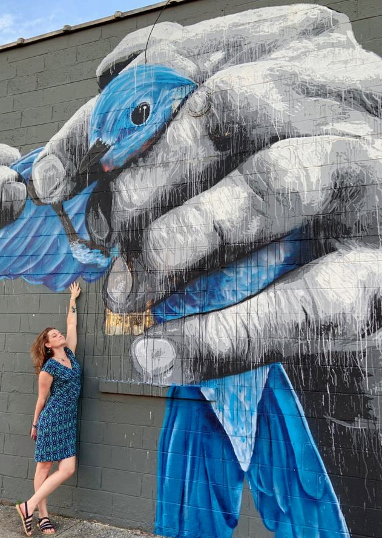

Who am I?
 My name is Robin Isadora Brown.
I am a senior Ph.D. candidate in Biology at the University of Virgina with the Kucenas lab. But the splash page already so let me elaborate:
I am a queer trans woman. I am a developmental neurobiologist. Some say I am a fan of birds.
This site serves as a sort of organizing space for various aspects of my professional life as a scientist and academic--with a healthy dash of personal flavor of course. Feel free to do a little polite snooping and learn more about me and what I do.
For your convenience, here are some fast facts about Robin (and a few about the bird):